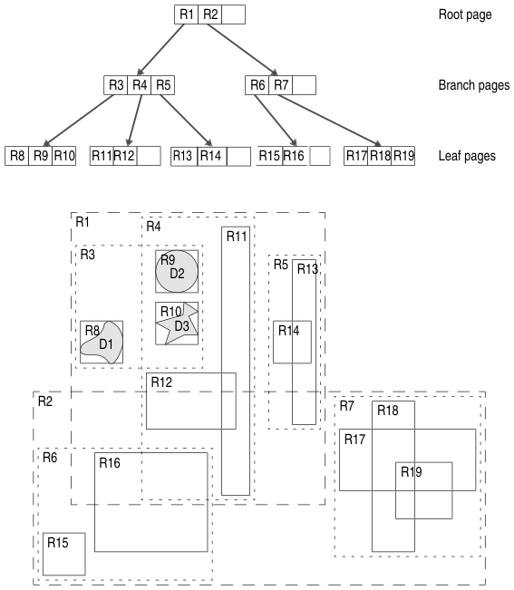

Wyklad 3: Geometrie, operacje przestrzenne i Processing Toolbox#
Programowanie w GIS — Kurs dla studentow I stopnia#
Kurs: Programowanie w GIS (QGIS)
Wyklad: 3/4 z 7
Tematy: QgsGeometry | Operacje przestrzenne | Reprojekcja | Tworzenie warstw | Processing
Wymagania wstepne: Wyklad 2 — PyQGIS, QgsProject, QgsVectorLayer
Jak korzystac z tego notatnika#
Notatnik laczy teorie z demonstracjami live coding.
Komorki Markdown zawieraja wyjasnienia i schematy.
Komorki [QGIS] wklejasz do edytora skryptow QGIS i uruchamiasz podczas wykladu.
Komorki [JUPYTER] mozna uruchomic tutaj — dzialaja bez QGIS.
Dane do demonstracji#
Przed wykladem wczytaj do QGIS warstwe panstw Natural Earth:
https://www.naturalearthdata.com/downloads/110m-cultural-vectors/
Pobierz Admin 0 — Countries i wczytaj jako warstwe wektorowa.
Sprawdz nazwe warstwy — demonstracje uzywaja 'ne_110m_admin_0_countries'.
1. Klasa QgsGeometry — tworzenie i inspekcja#
Klasa QgsGeometry reprezentuje geometrie pojedynczego obiektu wektorowego.
Jest centralnym obiektem przy wszelkich operacjach przestrzennych w PyQGIS.
Kazdy obiekt QgsFeature ma dokladnie jedna geometrie, dostepna przez .geometry().
1.1 Typy geometrii#
PyQGIS rozroznia dwa poziomy opisu typu geometrii:
Metoda |
Zwraca |
Przyklad |
|---|---|---|
|
Ogolna kategoria (0/1/2) |
0=punkt, 1=linia, 2=polygon |
|
Dokladny typ WKB |
Point, MultiPolygon, … |
|
Czytelna nazwa |
|
1.2 Tworzenie geometrii#
from qgis.core import QgsGeometry, QgsPointXY
# Z wspolrzednych
punkt = QgsGeometry.fromPointXY(QgsPointXY(17.038, 51.108))
linia = QgsGeometry.fromPolylineXY([
QgsPointXY(17.0, 51.0),
QgsPointXY(18.0, 51.5),
QgsPointXY(19.0, 51.0),
])
polygon = QgsGeometry.fromPolygonXY([[
QgsPointXY(17.0, 51.0), QgsPointXY(18.0, 51.0),
QgsPointXY(18.0, 52.0), QgsPointXY(17.0, 52.0),
QgsPointXY(17.0, 51.0), # zamkniecie pierscienia
]])
# Z formatu WKT (Well-Known Text)
g = QgsGeometry.fromWkt('POLYGON((17 51, 18 51, 18 52, 17 52, 17 51))')
1.3 Eksport i inspekcja#
g = obiekt.geometry()
print(g.asWkt()) # eksport do WKT
print(g.asJson()) # eksport do GeoJSON
print(g.isNull()) # True jesli geometria jest pusta
print(g.isGeosValid()) # True jesli topologicznie poprawna
print(g.boundingBox()) # prostokat obwiedni (QgsRectangle)
Uwaga: Geometria moze byc
null(brak ksztaltu) lubempty(ksztalt bez wierzcholkow). Zawsze sprawdzajisNull()przed operacjami jezeli dane pochodza z zewnetrznych zrodel.
Przykłady#
# [QGIS] Dodanie punktu
from qgis.core import (
QgsVectorLayer,
QgsFeature,
QgsGeometry,
QgsPointXY,
QgsProject
)
# Tworzymy pustą warstwę punktową
layer = QgsVectorLayer("Point?crs=EPSG:4326", "Punkty_miasta", "memory")
prov = layer.dataProvider()
# Tworzymy punkt (np. Rynek Wrocław)
geom = QgsGeometry.fromPointXY(QgsPointXY(17.0385, 51.1090))
feat = QgsFeature()
feat.setGeometry(geom)
prov.addFeature(feat)
layer.updateExtents()
QgsProject.instance().addMapLayer(layer)
---------------------------------------------------------------------------
ModuleNotFoundError Traceback (most recent call last)
Input In [1], in <cell line: 2>()
1 # [QGIS] Dodanie punktu
----> 2 from qgis.core import (
3 QgsVectorLayer,
4 QgsFeature,
5 QgsGeometry,
6 QgsPointXY,
7 QgsProject
8 )
10 # Tworzymy pustą warstwę punktową
11 layer = QgsVectorLayer("Point?crs=EPSG:4326", "Punkty_miasta", "memory")
ModuleNotFoundError: No module named 'qgis'
# [QGIS] Dodanie linii
from qgis.core import (
QgsVectorLayer,
QgsFeature,
QgsGeometry,
QgsPointXY,
QgsProject
)
# Pusta warstwa liniowa
layer_linie = QgsVectorLayer("LineString?crs=EPSG:4326", "Trasy", "memory")
prov_linie = layer_linie.dataProvider()
# Geometria linii
geom_linia = QgsGeometry.fromPolylineXY([
QgsPointXY(17.0385, 51.1090),
QgsPointXY(17.0450, 51.1105),
QgsPointXY(17.0520, 51.1120),
])
feat = QgsFeature()
feat.setGeometry(geom_linia)
prov_linie.addFeature(feat)
layer_linie.updateExtents()
QgsProject.instance().addMapLayer(layer_linie)
print("Długość linii:", geom_linia.length())
# [QGIS] Inspekcja geometrii pierwszego obiektu aktywnej warstwy
from qgis.core import QgsWkbTypes
layer = iface.activeLayer()
if not layer:
print('Zaznacz warstwe w Panelu warstw.')
else:
f = next(layer.getFeatures())
g = f.geometry()
print(f'Warstwa : {layer.name()}')
print(f'Typ ogolny : {g.type()} (0=punkt, 1=linia, 2=polygon)')
print(f'Typ WKB : {QgsWkbTypes.displayString(g.wkbType())}')
print(f'isNull : {g.isNull()}')
print(f'isGeosValid : {g.isGeosValid()}')
print(f'Liczba wierz. : {g.constGet().nCoordinates()}')
print(f'Bounding box : {g.boundingBox()}')
print(f'WKT (fragment) : {g.asWkt()[:80]}...')
# [QGIS] Co mozemy wyciagnac z punktu i linii?
from qgis.core import QgsWkbTypes, QgsFeature
# 1. Punkt -> wspolrzedne
pt = geom.asPoint()
print('PUNKT')
print(' x =', pt.x())
print(' y =', pt.y())
print(' typ geometrii =', QgsWkbTypes.displayString(geom.wkbType()))
# 2. Linia -> lista punktow
pts = geom_linia.asPolyline()
print('
LINIA')
print(' liczba wierzcholkow =', len(pts))
print(' pierwszy punkt =', (pts[0].x(), pts[0].y()))
print(' ostatni punkt =', (pts[-1].x(), pts[-1].y()))
print(' typ geometrii =', QgsWkbTypes.displayString(geom_linia.wkbType()))
# 3. Bounding box linii
bbox = geom_linia.boundingBox()
print('
BOUNDING BOX LINII')
print(' xmin =', bbox.xMinimum())
print(' xmax =', bbox.xMaximum())
print(' ymin =', bbox.yMinimum())
print(' ymax =', bbox.yMaximum())
# 4. Centroid linii
centroid = geom_linia.centroid()
print('
CENTROID LINII')
print(' punkt =', centroid.asPoint())
# 5. Odleglosc punkt -> linia
print('
ODLEGLOSC PUNKT-LINIA')
print(' distance =', geom.distance(geom_linia))
# 6. Dorzucmy centroid linii do warstwy punktowej, zeby bylo widac na mapie
feat_centroid = QgsFeature()
feat_centroid.setGeometry(centroid)
prov.addFeature(feat_centroid)
layer.updateExtents()
Czy linia to “obiekt”, czy po prostu lista punktow?
Co zwraca
length()?Czy centroid linii zawsze lezy na linii?
Czy bounding box to tez geometria, czy tylko opis liczbami?
2. Pomiary i statystyki#
2.1 Metody pomiarowe QgsGeometry#
Metody .area() i .length() zwracaja wartosci w jednostkach CRS.
Dla ukladow geograficznych (stopnie, EPSG:4326) wyniki nie maja fizycznego sensu.
Do pomiarow metrycznych nalezy uzyc klasy QgsDistanceArea:
from qgis.core import QgsDistanceArea, QgsProject, QgsUnitTypes
kalkulator = QgsDistanceArea()
kalkulator.setEllipsoid('WGS84') # uwzglednia krzywizne Ziemi
kalkulator.setSourceCrs(
layer.crs(),
QgsProject.instance().transformContext()
)
for f in layer.getFeatures():
area_m2 = kalkulator.measureArea(f.geometry())
area_km2 = kalkulator.convertAreaMeasurement(
area_m2, QgsUnitTypes.AreaSquareKilometers
)
print(f'{f["NAME"]:<25} {area_km2:>10.0f} km2')
2.2 Porownanie metod pomiaru#
Metoda |
Jednostki |
Uwzglednia elipsoide |
Kiedy uzywac |
|---|---|---|---|
|
Jednostki CRS |
Nie |
Szybkie porownania wzgledne |
|
m², km² |
Tak |
Dokladne pomiary fizyczne |
Processing: |
Dowolne |
Opcjonalnie |
Zapis do atrybutow |
Demo 1 — Rankingi i statystyki panstw na zywo#
Iterujemy po warstwie panstw i wyciagamy z niej statystyki. Zaczniemy od prostego rankingu, potem bedziemy rozszerzac kod.
# [QGIS] Demo 1a — TOP 10 panstw wedlug populacji
# Zacznij od tego bloku. Proste, szybkie, czytelny efekt.
layer = QgsProject.instance().mapLayersByName('ne_110m_admin_0_countries')[0]
dane = []
for f in layer.getFeatures():
pop = f['POP_EST']
if pop and pop > 0:
dane.append((f['NAME'], f['CONTINENT'], int(pop)))
dane.sort(key=lambda x: x[2], reverse=True)
print(f' {"Kraj":<25} {"Kontynent":<20} {"Populacja":>15}')
print(' ' + '-' * 62)
for i, (kraj, kontynent, pop) in enumerate(dane[:10], 1):
print(f' {i:>2}. {kraj:<23} {kontynent:<20} {pop:>15,}')
print(f'\n Lacznie panstw : {len(dane)}')
print(f' Ludnosc swiata : {sum(d[2] for d in dane):>20,}')
# [QGIS] Demo 1b — Statystyki per kontynent z prawdziwymi powierzchniami
# Doklejasz po 1a. Pokazuje QgsDistanceArea.
from collections import defaultdict
from qgis.core import QgsDistanceArea, QgsProject, QgsUnitTypes
layer = QgsProject.instance().mapLayersByName('ne_110m_admin_0_countries')[0]
kalkulator = QgsDistanceArea()
kalkulator.setEllipsoid('WGS84')
kalkulator.setSourceCrs(layer.crs(), QgsProject.instance().transformContext())
kontynenty = defaultdict(lambda: {'kraje': 0, 'pop': 0, 'area': 0.0})
for f in layer.getFeatures():
k = f['CONTINENT'] or 'Brak danych'
pop = f['POP_EST'] or 0
area_m2 = kalkulator.measureArea(f.geometry())
area_km2 = kalkulator.convertAreaMeasurement(area_m2, QgsUnitTypes.AreaSquareKilometers)
kontynenty[k]['kraje'] += 1
kontynenty[k]['pop'] += int(pop)
kontynenty[k]['area'] += area_km2
posortowane = sorted(kontynenty.items(), key=lambda x: x[1]['pop'], reverse=True)
print(f' {"Kontynent":<25} {"Kraje":>6} {"Populacja":>15} {"Pow. (km2)":>15}')
print(' ' + '-' * 65)
for nazwa, s in posortowane:
print(f' {nazwa:<25} {s["kraje"]:>6} {s["pop"]:>15,} {s["area"]:>15,.0f}')
# [QGIS] Demo 1c — Ciekawostki geograficzne
# Pytanie PRZED uruchomieniem:
# 'Ktory kraj ma najbardziej zlozony ksztalt?'
from qgis.core import QgsDistanceArea, QgsProject, QgsUnitTypes
layer = QgsProject.instance().mapLayersByName('ne_110m_admin_0_countries')[0]
kalkulator = QgsDistanceArea()
kalkulator.setEllipsoid('WGS84')
kalkulator.setSourceCrs(layer.crs(), QgsProject.instance().transformContext())
dane = []
for f in layer.getFeatures():
area_km2 = kalkulator.convertAreaMeasurement(
kalkulator.measureArea(f.geometry()), QgsUnitTypes.AreaSquareKilometers)
pop = f['POP_EST'] or 0
nvert = f.geometry().constGet().nCoordinates()
dane.append({'name': f['NAME'], 'pop': int(pop),
'area': area_km2,
'gestosc': int(pop)/area_km2 if area_km2 > 0 else 0,
'nvert': nvert})
print(' Najmniejsze panstwa:')
for d in sorted(dane, key=lambda x: x['area'])[:5]:
print(f' {d["name"]:<28} {d["area"]:>10.1f} km2')
print('\n Najwieksza gestosc zaludnienia (os/km2):')
for d in sorted(dane, key=lambda x: x['gestosc'], reverse=True)[:5]:
print(f' {d["name"]:<28} {d["gestosc"]:>10.0f}')
print('\n Najbardziej zlozony ksztalt (liczba wierzcholkow):')
for d in sorted(dane, key=lambda x: x['nvert'], reverse=True)[:5]:
print(f' {d["name"]:<28} {d["nvert"]:>8} wierz.')
2b. Uklady wspolrzednych i transformacja geometrii#
Zanim przejdziemy do buforowania musimy omowic temat ktory jest warunkiem poprawnego wykonania niemal kazdej operacji metrycznej w PyQGIS.
Dlaczego to jest wazne#
Warstwa panstw Natural Earth jest w ukladzie WGS 84 (EPSG:4326).
Jednostka tego ukladu to stopnie geograficzne, nie metry.
Gdy wywolamy geom.buffer(100) na takiej geometrii,
dostaniemy bufor o promieniu 100 stopni — czyli ponad polowe globu.
Zanim wykonamy jakakolwiek operacje metryczna (bufor, pomiar odleglosci, pole powierzchni w km2), geometria musi byc w ukladzie metrycznym.
Trzy klasy do transformacji#
from qgis.core import (
QgsCoordinateReferenceSystem, # definicja ukladu
QgsCoordinateTransform, # obiekt transformacji miedzy dwoma ukladami
QgsProject # dostarcza kontekst transformacji
)
Uklady definiujemy przez kod EPSG:
crs_geo = QgsCoordinateReferenceSystem('EPSG:4326') # WGS84, stopnie
crs_metr = QgsCoordinateReferenceSystem('EPSG:3857') # Web Mercator, metry
Obiekt transformacji laczy dwa uklady i umozliwia przeliczenie wspolrzednych:
do_metrow = QgsCoordinateTransform(
crs_geo, # uklad zrodlowy
crs_metr, # uklad docelowy
QgsProject.instance() # kontekst
)
z_powrotem = QgsCoordinateTransform(
crs_metr, # teraz odwrotnie
crs_geo,
QgsProject.instance()
)
Metoda transform() dziala in-place#
To jest najwazniejsza pulapka. Metoda .transform() modyfikuje geometrie
bezposrednio, bez tworzenia kopii:
geom = f.geometry() # geometria obiektu w WGS84
# ZLE — transformujemy oryginalna geometrie obiektu!
geom.transform(do_metrow)
# DOBRZE — najpierw kopia, dopiero transformacja
geom_metr = QgsGeometry(geom) # konstruktor kopiujacy
geom_metr.transform(do_metrow)
Po transformacji geom_metr zawiera wspolrzedne w metrach,
a geom pozostaje niezmieniona w stopniach.
Typowy wzorzec: przelicz -> operuj -> przelicz z powrotem#
from qgis.core import (
QgsCoordinateReferenceSystem, QgsCoordinateTransform, QgsProject, QgsGeometry
)
crs_geo = QgsCoordinateReferenceSystem('EPSG:4326')
crs_metr = QgsCoordinateReferenceSystem('EPSG:3857')
do_metr = QgsCoordinateTransform(crs_geo, crs_metr, QgsProject.instance())
do_geo = QgsCoordinateTransform(crs_metr, crs_geo, QgsProject.instance())
# Krok 1: pobierz geometrie w stopniach
geom_geo = f.geometry()
# Krok 2: skopiuj i przelicz do metrow
geom_metr = QgsGeometry(geom_geo)
geom_metr.transform(do_metr)
# Krok 3: wykonaj operacje metryczna (np. bufor 50 km)
wynik_metr = geom_metr.buffer(50_000, 32)
# Krok 4: przelicz wynik z powrotem do stopni
wynik_geo = QgsGeometry(wynik_metr)
wynik_geo.transform(do_geo)
# wynik_geo mozna juz nalozyc na warstwy w WGS84
Popularne uklady metryczne#
Kod EPSG |
Nazwa |
Zakres stosowania |
Uwaga |
|---|---|---|---|
EPSG:3857 |
Web Mercator |
Caly swiat |
Znieksztalcenia przy biegunach |
EPSG:2180 |
PL-1992 (CS92) |
Polska |
Najdokładniejszy dla PL |
EPSG:3035 |
ETRS89-LAEA |
Europa |
Rowne pola powierzchni |
EPSG:32634 |
UTM Zone 34N |
Europa Srodkowa |
Dobry kompromis |
Dla demonstracji z buforami uzywamy EPSG:3857 (dostepny zawsze, nie wymaga dodatkowej konfiguracji). Dla danych dotyczacych Polski w produkcyjnych skryptach lepszy jest EPSG:2180.
# [QGIS] Demo transformacji — ten sam punkt w czterech ukladach
from qgis.core import (
QgsGeometry, QgsPointXY,
QgsCoordinateReferenceSystem, QgsCoordinateTransform, QgsProject
)
WROCLAW = (17.038, 51.108)
uklady = [
('EPSG:3857', 'Web Mercator'),
('EPSG:2180', 'PL-1992 (CS92)'),
('EPSG:3035', 'ETRS89-LAEA'),
('EPSG:32634', 'UTM Zone 34N'),
]
crs_geo = QgsCoordinateReferenceSystem('EPSG:4326')
print('Wroclaw (17.038, 51.108) w roznych ukladach:')
print(f' WGS84 (EPSG:4326) : lon={WROCLAW[0]}, lat={WROCLAW[1]} [stopnie]')
print()
for epsg, nazwa in uklady:
crs_cel = QgsCoordinateReferenceSystem(epsg)
tr = QgsCoordinateTransform(crs_geo, crs_cel, QgsProject.instance())
g = QgsGeometry.fromPointXY(QgsPointXY(*WROCLAW))
g.transform(tr)
p = g.asPoint()
print(f' {epsg} ({nazwa}):')
print(f' X = {p.x():>15.3f} m')
print(f' Y = {p.y():>15.3f} m')
print()
# Pokaz efektu in-place — kopia vs bez kopii
print('--- Demonstracja in-place ---')
crs_metr = QgsCoordinateReferenceSystem('EPSG:3857')
do_metr = QgsCoordinateTransform(crs_geo, crs_metr, QgsProject.instance())
g_oryg = QgsGeometry.fromPointXY(QgsPointXY(*WROCLAW))
g_kopia = QgsGeometry(g_oryg) # kopia!
g_kopia.transform(do_metr)
print(f'Oryginal po transform na kopii : {g_oryg.asPoint()}')
print(f'Kopia po transform : {g_kopia.asPoint()}')
print('Oryginal pozostal w stopniach — kopia jest w metrach.')
# [QGIS] Reprojekcja — Wroclaw w roznych ukladach wspolrzednych
from qgis.core import (
QgsGeometry, QgsPointXY, QgsCoordinateReferenceSystem,
QgsCoordinateTransform, QgsProject
)
WROCLAW = (17.038, 51.108)
uklady = [
('EPSG:3857', 'Web Mercator'),
('EPSG:2180', 'PL-1992 (CS92)'),
('EPSG:3035', 'ETRS89-LAEA'),
('EPSG:32634', 'UTM Zone 34N'),
]
crs_geo = QgsCoordinateReferenceSystem('EPSG:4326')
print(f'Wroclaw w roznych ukladach wspolrzednych:')
print(f' WGS84 (EPSG:4326): lon={WROCLAW[0]}, lat={WROCLAW[1]}')
print()
for epsg, nazwa in uklady:
crs_cel = QgsCoordinateReferenceSystem(epsg)
tr = QgsCoordinateTransform(crs_geo, crs_cel, QgsProject.instance())
g = QgsGeometry.fromPointXY(QgsPointXY(*WROCLAW))
g.transform(tr)
p = g.asPoint()
print(f' {epsg} ({nazwa}):')
print(f' X = {p.x():>15.3f}')
print(f' Y = {p.y():>15.3f}')
print()
3. Buforowanie#
3.1 Czym jest bufor#
Bufor (ang. buffer) to obszar otaczajacy geometrie w zadanej odleglosci. Jest jednym z najczesciej uzywanych narzedzi w analizie przestrzennej: strefy ochronne, zasiegi uslug, analizy transportowe.
# Bufor pojedynczej geometrii
geom_po_buforowaniu = geom.buffer(
distance=1.0, # odleglosc w jednostkach CRS
segments=32 # liczba segmentow aproksymujacych luk
)
3.2 Pulapka jednostek#
Metoda .buffer() przyjmuje odleglosc w jednostkach CRS geometrii.
CRS |
Jednostka |
|
|---|---|---|
EPSG:4326 (WGS84) |
stopnie |
~111 km na rowniku |
EPSG:2180 (PL-1992) |
metry |
1 metr |
EPSG:3857 (Web Mercator) |
metry |
1 metr (znieksztalcony przy biegunach) |
Aby bufforowac w metrach dla danych w stopniach:
# 1. Reprojekcja geometrii do ukladu metrycznego
geom_metr = QgsGeometry(geom_geo) # kopia!
geom_metr.transform(transformacja_do_metrow)
# 2. Bufor w metrach
bufor_metr = geom_metr.buffer(500_000, 64) # 500 km
# 3. Cofniecie do pierwotnego CRS
bufor_geo = QgsGeometry(bufor_metr)
bufor_geo.transform(transformacja_z_powrotem)
3.3 Parametr segments#
Im wiecej segmentow, tym gladszy okrag — ale i wieksza geometria:
segments |
Liczba wierz. buforu punktu |
Jakosc |
|---|---|---|
4 |
~8 |
Kwadrat |
8 |
~16 |
Osmiokat |
16 |
~32 |
Wyraznie wielokatny |
32 |
~64 |
Wizualnie okragly |
64 |
~128 |
Bardzo gladki — duze pliki |
Demo 2 — Bufory strefowe wokol wybranego panstwa#
Tworzymy trzy koncentryczne strefy buforow w metrach.
Wybierz KRAJ do buforowania.
# [QGIS] Demo 2 — Koncentryczne strefy buforow wokol panstwa
# Zmien KRAJ, STREFY i KOLORY przed pokazem
from qgis.core import (
QgsGeometry, QgsFeature, QgsVectorLayer, QgsProject,
QgsCoordinateReferenceSystem, QgsCoordinateTransform, QgsFillSymbol
)
from qgis.PyQt.QtGui import QColor
KRAJ = 'Poland'
STREFY = [200, 500, 1000] # km
KOLORY = ['#fee08b', '#f46d43', '#d73027']
layer = QgsProject.instance().mapLayersByName('ne_110m_admin_0_countries')[0]
kraj_feat = next((f for f in layer.getFeatures() if f['NAME'] == KRAJ), None)
if not kraj_feat:
print(f'Nie znaleziono kraju: {KRAJ}')
else:
crs_geo = QgsCoordinateReferenceSystem('EPSG:4326')
crs_metr = QgsCoordinateReferenceSystem('EPSG:3857')
do_metr = QgsCoordinateTransform(crs_geo, crs_metr, QgsProject.instance())
do_geo = QgsCoordinateTransform(crs_metr, crs_geo, QgsProject.instance())
geom_metr = QgsGeometry(kraj_feat.geometry())
geom_metr.transform(do_metr)
poprzedni = geom_metr
for km, kolor in zip(STREFY, KOLORY):
buf = geom_metr.buffer(km * 1000, 48)
pierscien = buf.difference(poprzedni)
pierscien_geo = QgsGeometry(pierscien)
pierscien_geo.transform(do_geo)
wl = QgsVectorLayer('Polygon?crs=EPSG:4326', f'Strefa_{km}km', 'memory')
wl.startEditing()
feat = QgsFeature()
feat.setGeometry(pierscien_geo)
wl.addFeature(feat)
wl.commitChanges()
symbol = QgsFillSymbol.createSimple({
'color': kolor, 'outline_color': '#555555', 'outline_width': '0.3'})
symbol.setOpacity(0.55)
wl.renderer().setSymbol(symbol)
QgsProject.instance().addMapLayer(wl)
poprzedni = buf
print(f'Strefa {km} km dodana.')
iface.mapCanvas().refresh()
print(f'Bufory strefowe wokol {KRAJ} gotowe.')
4. Operacje na zbiorach geometrii#
Operacje na zbiorach wykonuja dzialania na dwoch geometriach i zwracaja
nowy obiekt QgsGeometry. Sa fundamentem analizy nakładkowania (ang. overlay).
4.1 Podstawowe operacje#
Metoda |
Opis |
Analogia |
|---|---|---|
|
Czesc wspolna dwoch geometrii |
A i B |
|
Suma dwoch geometrii |
A lub B |
|
Czesc A bez czesci wspolnej z B |
A bez B |
|
Czesci nienalezace do czesci wspolnej |
A lub B, ale nie obydwa |
|
Polaczenie bez scalania (GeometryCollection) |
A + B obok siebie |
4.2 Walidacja przed operacja#
Operacje geometryczne moga sie nie powiesc gdy geometria jest niepoprawna. Zawsze warto sprawdzic waznosc i naprawic geometrie przed operacjami:
if not geom.isGeosValid():
geom = geom.makeValid() # napraw automatycznie
Demo 3 — Przeciecie i roznica buforow dwoch panstw#
Dwa panstwa lezy obok siebie. Buforujemy je o 0.5 stopnia zeby zachodzily na siebie, a nastepnie tworzymy warstwy dla kazdej operacji. Efekt: 5 nowych warstw na mapie, kazda pokazuje inny wynik geometryczny.
# [QGIS] Demo 3 — Operacje na zbiorach geometrii jako warstwy na mapie
from qgis.core import (
QgsGeometry, QgsFeature, QgsVectorLayer, QgsProject, QgsFillSymbol
)
KRAJ_A = 'France'
KRAJ_B = 'Germany'
layer = QgsProject.instance().mapLayersByName('ne_110m_admin_0_countries')[0]
geom_a = next(f for f in layer.getFeatures() if f['NAME'] == KRAJ_A).geometry()
geom_b = next(f for f in layer.getFeatures() if f['NAME'] == KRAJ_B).geometry()
# Bufory 0.5 stopnia zeby mialy czesc wspolna
buf_a = geom_a.buffer(0.5, 32)
buf_b = geom_b.buffer(0.5, 32)
operacje = [
(f'Bufor_{KRAJ_A}', buf_a, '#3288bd', 0.35),
(f'Bufor_{KRAJ_B}', buf_b, '#d53e4f', 0.35),
('Przeciecie_AB', buf_a.intersection(buf_b), '#fee08b', 0.85),
(f'Roznica_{KRAJ_A}_bez_{KRAJ_B}', buf_a.difference(buf_b), '#99d594', 0.75),
('Roznica_symetryczna', buf_a.symDifference(buf_b),'#fc8d59', 0.65),
]
for nazwa, geom, kolor, opacity in operacje:
if geom.isEmpty():
print(f'{nazwa}: pusta geometria, pomijam.')
continue
wl = QgsVectorLayer('Polygon?crs=EPSG:4326', nazwa, 'memory')
wl.startEditing()
feat = QgsFeature()
feat.setGeometry(geom)
wl.addFeature(feat)
wl.commitChanges()
symbol = QgsFillSymbol.createSimple({
'color': kolor, 'outline_color': '#333333', 'outline_width': '0.4'})
symbol.setOpacity(opacity)
wl.renderer().setSymbol(symbol)
QgsProject.instance().addMapLayer(wl)
print(f'{nazwa:45} pole pow.: {geom.area():.4f} stopni kw.')
iface.mapCanvas().refresh()
5. Relacje przestrzenne#
Relacje przestrzenne odpowiadaja na pytanie: jak dwie geometrie sa polozene
wzgledem siebie? Kazda zwraca wartosc logiczna True lub False.
5.1 Przeglad relacji#
Metoda |
Pytanie |
|---|---|
|
Czy geometrie maja jakikolwiek wspolny punkt? |
|
Czy A zawiera B w calosci (B wewnatrz A)? |
|
Czy A jest calkowicie wewnatrz B? |
|
Czy stykaja sie tylko na granicy (bez wnetrza)? |
|
Czy czesciowo sie pokrywaja (wspolne wnetrze, ale nie jedna zawiera drugiej)? |
|
Czy nie maja zadnego wspolnego punktu? |
|
Jaka jest minimalna odleglosc miedzy geometriami? |
5.2 Wzorzec wydajnego zapytania przestrzennego#
Naiwne podejscie — sprawdzamy kazdy obiekt z kazdym — ma zlozonosc O(n²). Dla duzych warstw jest to za wolne. Prawidlowy wzorzec:
Krok 1: setFilterRect(bbox) — szybki filtr wstepny przez indeks R-tree
eliminuje obiekty daleko od obszaru
Krok 2: geom.intersects(ref) — dokladne sprawdzenie geometryczne
tylko dla kandydatow z kroku 1
from qgis.core import QgsFeatureRequest
# Zapytanie przez bbox (szybkie)
req = QgsFeatureRequest().setFilterRect(bufor.boundingBox())
wynik = []
for f in layer.getFeatures(req):
if f.geometry().intersects(bufor): # dokladne
wynik.append(f)

Demo 4 — Kraje w zasiegu od zadanego punktu#
Wpisujesz miasto i promien — na mapie pojawia sie okrag i zaznaczaja sie wszystkie panstwa w zasiegu. Zaproponuj studentom: podajcie mi miasto i promien.
# [QGIS] Demo 4 — Kraje w zasiegu od zadanego punktu
# Zmien MIASTO_NAZWA, MIASTO_LON, MIASTO_LAT i PROMIEN_KM
from qgis.core import (
QgsGeometry, QgsPointXY, QgsFeature, QgsVectorLayer, QgsProject,
QgsCoordinateReferenceSystem, QgsCoordinateTransform,
QgsFeatureRequest, QgsFillSymbol, QgsMarkerSymbol
)
MIASTO_NAZWA = 'Wroclaw'
MIASTO_LON = 17.038
MIASTO_LAT = 51.108
PROMIEN_KM = 800
layer = QgsProject.instance().mapLayersByName('ne_110m_admin_0_countries')[0]
crs_geo = QgsCoordinateReferenceSystem('EPSG:4326')
crs_metr = QgsCoordinateReferenceSystem('EPSG:3857')
do_metr = QgsCoordinateTransform(crs_geo, crs_metr, QgsProject.instance())
do_geo = QgsCoordinateTransform(crs_metr, crs_geo, QgsProject.instance())
# Bufor w metrach -> cofnij do geo
punkt = QgsGeometry.fromPointXY(QgsPointXY(MIASTO_LON, MIASTO_LAT))
punkt.transform(do_metr)
bufor_metr = punkt.buffer(PROMIEN_KM * 1000, 64)
bufor_geo = QgsGeometry(bufor_metr)
bufor_geo.transform(do_geo)
# Znajdz kraje — wzorzec bbox + dokladne sprawdzenie
req = QgsFeatureRequest().setFilterRect(bufor_geo.boundingBox())
znalezione = []
for f in layer.getFeatures(req):
if f.geometry().intersects(bufor_geo):
znalezione.append(f['NAME'])
znalezione.sort()
print(f'Kraje w promieniu {PROMIEN_KM} km od {MIASTO_NAZWA} ({len(znalezione)}):')
for kraj in znalezione:
print(f' {kraj}')
# Warstwa buforu
wl_buf = QgsVectorLayer('Polygon?crs=EPSG:4326', f'Zasieg_{PROMIEN_KM}km', 'memory')
wl_buf.startEditing()
fb = QgsFeature()
fb.setGeometry(bufor_geo)
wl_buf.addFeature(fb)
wl_buf.commitChanges()
sym_buf = QgsFillSymbol.createSimple({
'color': '220,50,50,40', 'outline_color': '#dc3232', 'outline_width': '0.8'})
wl_buf.renderer().setSymbol(sym_buf)
QgsProject.instance().addMapLayer(wl_buf)
# Zaznacz kraje
layer.selectByExpression(
' OR '.join([f'"NAME" = \'{k}\'' for k in znalezione]))
iface.mapCanvas().refresh()
print('Kraje zaznaczone na mapie.')
# [QGIS] Odległość stolic europejskich od Warszawy - jaka będzie kolejność?
from qgis.core import QgsVectorLayer, QgsField, QgsFeature, QgsGeometry, QgsPointXY, QgsCoordinateReferenceSystem, QgsCoordinateTransform, QgsProject
from PyQt5.QtCore import QVariant
cap_layer = QgsVectorLayer('Point?crs=EPSG:4326&field=capital:string&field=country:string', 'Stolice_Europy', 'memory')
prov_cap = cap_layer.dataProvider()
capital_data = [
('Warszawa', 'Poland', 21.0122, 52.2297),
('Berlin', 'Germany', 13.4050, 52.5200),
('Prague', 'Czechia', 14.4378, 50.0755),
('Vienna', 'Austria', 16.3738, 48.2082),
('Bratislava', 'Slovakia', 17.1077, 48.1486),
('Budapest', 'Hungary', 19.0402, 47.4979),
('Vilnius', 'Lithuania', 25.2797, 54.6872),
]
feats = []
for capital, country, lon, lat in capital_data:
f = QgsFeature(cap_layer.fields())
f.setAttributes([capital, country])
f.setGeometry(QgsGeometry.fromPointXY(QgsPointXY(lon, lat)))
feats.append(f)
prov_cap.addFeatures(feats)
cap_layer.updateExtents()
QgsProject.instance().addMapLayer(cap_layer)
WROCLAW = (17.038, 51.108)
crs_geo = QgsCoordinateReferenceSystem('EPSG:4326')
crs_metr = QgsCoordinateReferenceSystem('EPSG:3857')
do_metr = QgsCoordinateTransform(crs_geo, crs_metr, QgsProject.instance())
def odl_km(lon1, lat1, lon2, lat2):
p1 = QgsGeometry.fromPointXY(QgsPointXY(lon1, lat1))
p2 = QgsGeometry.fromPointXY(QgsPointXY(lon2, lat2))
p1.transform(do_metr)
p2.transform(do_metr)
return p1.distance(p2) / 1000
layer = QgsProject.instance().mapLayersByName('Stolice_Europy')[0]
wyniki = []
for f in layer.getFeatures():
p = f.geometry().asPoint()
odl = odl_km(WROCLAW[0], WROCLAW[1], p.x(), p.y())
wyniki.append((f['capital'], odl))
wyniki.sort(key=lambda x: x[1])
print(f' {"Stolica":<15} {"Odleglosc":>12}')
print(' ' + '-' * 29)
for miasto, odl in wyniki:
print(f' {miasto:<15} {odl:>9.0f} km')
6. Centroid i jego pulapki#
6.1 Czym jest centroid#
Centroid to srodek ciezkosci geometrii — punkt, ktory minimalizuje sume kwadratow odleglosci do wszystkich wierzcholkow. Intuicyjnie: punkt rownowagi.
centroid = geom.centroid() # srodek ciezkosci
punkt_wew = geom.pointOnSurface() # punkt gwarantowanie wewnatrz
6.2 Kiedy centroid lezy poza obiektem#
Centroid moze lezec poza geometria gdy:
obiekt jest wklesly (np. podkowa, sierp),
obiekt jest nieciagly (MultiPolygon: kraj z wyspami),
obiekt ma wydluzony, zakrzywiony ksztalt.
Dla takich przypadkow bezpieczna alternatywa jest pointOnSurface(),
ktora gwarantuje ze wynik lezy wewnatrz lub na granicy geometrii.
Demo 5 — Kraje z centroidem poza granica#
Czy centroid zawsze lezy wewnatrz kraju? Ile panstw ma centroid poza swoim terytorium? A ile na morzu?
Wynik: Krzyżyki tam gdzie centroid wypadl poza granice,
zielone kropki jako poprawione punkty przez pointOnSurface().
# [QGIS] Demo 5 — Centroidy poza krajem
from qgis.core import (
QgsGeometry, QgsFeature, QgsVectorLayer, QgsProject,
QgsMarkerSymbol
)
layer = QgsProject.instance().mapLayersByName('ne_110m_admin_0_countries')[0]
wl_ok = QgsVectorLayer('Point?crs=EPSG:4326&field=name:string&field=typ:string',
'Centroidy_OK', 'memory')
wl_zly = QgsVectorLayer('Point?crs=EPSG:4326&field=name:string&field=typ:string',
'Centroidy_POZA_KRAJEM', 'memory')
wl_ok.startEditing()
wl_zly.startEditing()
zle = []
for f in layer.getFeatures():
geom = f.geometry()
centroid = geom.centroid()
nazwa = f['NAME']
if geom.contains(centroid):
feat = QgsFeature(wl_ok.fields())
feat.setGeometry(centroid)
feat.setAttribute('name', nazwa)
feat.setAttribute('typ', 'centroid_OK')
wl_ok.addFeature(feat)
else:
zle.append(nazwa)
# Zly centroid
fz = QgsFeature(wl_zly.fields())
fz.setGeometry(centroid)
fz.setAttribute('name', nazwa)
fz.setAttribute('typ', 'centroid_ZLY')
wl_zly.addFeature(fz)
# Poprawiony punkt
fp = QgsFeature(wl_ok.fields())
fp.setGeometry(geom.pointOnSurface())
fp.setAttribute('name', nazwa + ' (fix)')
fp.setAttribute('typ', 'pointOnSurface')
wl_ok.addFeature(fp)
wl_ok.commitChanges()
wl_zly.commitChanges()
wl_ok.renderer().setSymbol(QgsMarkerSymbol.createSimple({
'name': 'circle', 'color': '#2ca25f', 'size': '2', 'outline_style': 'no'}))
wl_zly.renderer().setSymbol(QgsMarkerSymbol.createSimple({
'name': 'cross', 'color': '#e31a1c', 'size': '4', 'outline_width': '0.6'}))
QgsProject.instance().addMapLayer(wl_ok)
QgsProject.instance().addMapLayer(wl_zly)
iface.mapCanvas().refresh()
print(f'Kraje z centroidem POZA granica ({len(zle)}):')
for k in sorted(zle): print(f' {k}')
print()
print('Czerwony krzyzyk = centroid poza krajem')
print('Zielona kropka = pointOnSurface (zawsze wewnatrz)')
7. Sasiedztwo i graf przestrzenny#
7.1 Relacja touches#
Dwa obiekty sa sasiadami jesli ich granice stykaja sie:
# Sasiedztwo przez touches (wspolna granica, bez wnetrza)
geom_a.touches(geom_b)
# Lub przez intersects (bardziej tolerancyjne, lapie tez przesliegajace sie)
geom_a.buffer(epsilon, segments).intersects(geom_b.buffer(epsilon, segments))
W danych 110m granice panstw nie sa idealnie zgodne, dlatego uzywamy
malego bufora epsilon jako marginesu tolerancji.
7.2 Graf przestrzenny i BFS#
Zbior wszystkich relacji sasiedztwa tworzy graf przestrzenny:
Polska — Niemcy — Francja — Hiszpania
\ Czechy\ Austria
Sasiedzi k-tego stopnia to kraje oddalone o dokladnie k krawedzi w tym grafie. Do znalezienia ich uzywamy BFS (Breadth-First Search) — algorytmu przeszukiwania wszerz, ktory eksploruje warstwy grafu poziom po poziomie.
BFS to klasyczny algorytm z informatyki — jego zastosowanie w GIS pokazuje, ze programowanie przestrzenne to nie tylko geometria, ale rowniez teoria grafow.
Demo 6 — Sasiedzi 1. i 2. stopnia#
Zaproponuj kraj startowy przed uruchomieniem.
Wynik: mapa z trzema kolorami — kraj startowy (czerwony),
sasiedzi 1. stopnia (pomaranczowy), sasiedzi 2. stopnia (zolty).
Bonus w konsoli: ranking krajow z najwieksza liczba sasiadow
i lista wysp bez zadnych sasiadow.
# [QGIS] Demo 6 — Sasiedzi 1. i 2. stopnia przez BFS
# Zmien KRAJ_START na propozycje studenta
# Uwaga: budowanie grafu trwa ~20-30 sekund
from qgis.core import (
QgsProject, QgsVectorLayer, QgsFeature,
QgsFillSymbol, QgsRuleBasedRenderer
)
from collections import defaultdict, deque
KRAJ_START = 'Poland'
layer = QgsProject.instance().mapLayersByName('ne_110m_admin_0_countries')[0]
# Krok 1: zbuduj slownik geometrii
print('Budowanie grafu sasiedztwa...')
geomy = {f['NAME']: f.geometry() for f in layer.getFeatures()}
kraje = list(geomy.keys())
# Krok 2: znajdz sasiadow (bufory 0.05 stopnia jako margines tolerancji)
EPSILON = 0.05
sasiedzi = defaultdict(set)
for i, a in enumerate(kraje):
for b in kraje[i+1:]:
if (geomy[a].buffer(EPSILON, 20).intersects(geomy[b].buffer(EPSILON, 20))
and not geomy[a].equals(geomy[b])):
sasiedzi[a].add(b)
sasiedzi[b].add(a)
print(f'Graf gotowy: {len(kraje)} wezlow, '
f'{sum(len(v) for v in sasiedzi.values())//2} krawedzi.')
sasiedzi_2stopnia = []
# Krok 3: BFS od kraju startowego do glebokosci 2
for sas in sasiedzi[KRAJ_START]:
sasiedzi_2stopnia += sasiedzi[sas]
sasiedzi_2stopnia = list(set(sasiedzi_2stopnia))
print(sasiedzi_2stopnia)
# Krok 4: warstwa wynikowa z kolorowaniem
wl = QgsVectorLayer(
'Polygon?crs=EPSG:4326&field=name:string&field=stopien:integer',
f'Sasiedzi_{KRAJ_START}', 'memory')
wl.startEditing()
for f in layer.getFeatures():
n = f['NAME']
if n not in sasiedzi_2stopnia: continue
nf = QgsFeature(wl.fields())
nf.setGeometry(f.geometry())
nf.setAttribute('name', n)
nf.setAttribute('stopien', stopien[n])
wl.addFeature(nf)
wl.commitChanges()
# Rule-Based Renderer — rozne kolory per stopien
root = QgsRuleBasedRenderer.Rule(None)
for wyraz, kolor, op, etyk in [
('"stopien" = 0', '#e31a1c', 0.9, f'{KRAJ_START} (start)'),
('"stopien" = 1', '#fd8d3c', 0.7, 'Sasiedzi 1. stopnia'),
('"stopien" = 2', '#fecc5c', 0.5, 'Sasiedzi 2. stopnia'),
]:
sym = QgsFillSymbol.createSimple({
'color': kolor, 'outline_color': '#555', 'outline_width': '0.3'})
sym.setOpacity(op)
reg = QgsRuleBasedRenderer.Rule(sym)
reg.setFilterExpression(wyraz)
reg.setLabel(etyk)
root.appendChild(reg)
wl.setRenderer(QgsRuleBasedRenderer(root))
QgsProject.instance().addMapLayer(wl)
iface.mapCanvas().refresh()
8. Tworzenie warstw od podstaw#
8.1 Warstwa w pamieci#
Nowa warstwe tworzymy przez konstruktor QgsVectorLayer z parametrem 'memory'.
Definicja w URI:
warstwa = QgsVectorLayer(
'Point?crs=EPSG:4326&field=name:string&field=pop:integer',
'nazwa_warstwy', # widoczna w Panelu warstw
'memory' # dostawca danych
)
Dostepne typy geometrii: Point, LineString, Polygon,
MultiPoint, MultiLineString, MultiPolygon.
8.2 Dodawanie obiektow#
from qgis.core import QgsFeature, QgsGeometry, QgsPointXY
warstwa.startEditing()
obiekt = QgsFeature(warstwa.fields())
obiekt.setGeometry(QgsGeometry.fromPointXY(QgsPointXY(17.038, 51.108)))
obiekt['name'] = 'Wroclaw'
obiekt['pop'] = 641000
warstwa.addFeature(obiekt)
warstwa.commitChanges()
# Dodaj do projektu i odswierz mape
QgsProject.instance().addMapLayer(warstwa)
iface.mapCanvas().refresh()
Demo 7 — Generowanie danych geometrycznych#
Pokaz ze geometrie mozna tworzyc z czystej matematyki, bez zewnetrznych danych. Trzy demonstracje: siatka prostokatna, spirala, odleglosci stolic od Wroclawia.
# [QGIS] Demo 7a — Siatka prostokatna nad Polska
from qgis.core import (
QgsGeometry, QgsFeature, QgsVectorLayer, QgsProject, QgsFillSymbol
)
X_MIN, X_MAX = 14.0, 24.5
Y_MIN, Y_MAX = 49.0, 55.0
KROK = 0.5
wl = QgsVectorLayer(
'Polygon?crs=EPSG:4326&field=col:integer&field=row:integer'
'&field=cx:double&field=cy:double',
'Siatka_PL', 'memory')
wl.startEditing()
x, col = X_MIN, 0
while x < X_MAX:
y, row = Y_MIN, 0
while y < Y_MAX:
feat = QgsFeature(wl.fields())
feat.setGeometry(QgsGeometry.fromWkt(
f'POLYGON(({x} {y},{x+KROK} {y},{x+KROK} {y+KROK},{x} {y+KROK},{x} {y}))'))
feat.setAttribute('col', col)
feat.setAttribute('row', row)
feat.setAttribute('cx', round(x+KROK/2, 4))
feat.setAttribute('cy', round(y+KROK/2, 4))
wl.addFeature(feat)
y += KROK; row += 1
x += KROK; col += 1
wl.commitChanges()
symbol = QgsFillSymbol.createSimple({
'color': '200,200,255,40', 'outline_color': '#6666aa', 'outline_width': '0.3'})
wl.renderer().setSymbol(symbol)
QgsProject.instance().addMapLayer(wl)
iface.mapCanvas().refresh()
print(f'Siatka: {wl.featureCount()} komorek ({KROK}x{KROK} stopnia).')
# [QGIS] Demo 7b — Spirala Archimedesa
# Czysta matematyka -> warstwa wektorowa
import math
from qgis.core import (
QgsGeometry, QgsPointXY, QgsFeature,
QgsVectorLayer, QgsProject, QgsLineSymbol
)
LON_0, LAT_0 = 19.0, 52.0
ZWOJE = 5
SKALA = 0.3
KROKI = 800
punkty = []
for i in range(KROKI + 1):
t = i / KROKI * ZWOJE * 2 * math.pi
r = (t / (2 * math.pi)) * SKALA
punkty.append(QgsPointXY(LON_0 + r*math.cos(t), LAT_0 + r*math.sin(t)))
wl = QgsVectorLayer('LineString?crs=EPSG:4326', 'Spirala', 'memory')
wl.startEditing()
feat = QgsFeature()
feat.setGeometry(QgsGeometry.fromPolylineXY(punkty))
wl.addFeature(feat)
wl.commitChanges()
sym = QgsLineSymbol.createSimple({'color': '#e31a1c', 'width': '0.8'})
wl.renderer().setSymbol(sym)
QgsProject.instance().addMapLayer(wl)
iface.mapCanvas().setExtent(wl.extent().buffered(0.5))
iface.mapCanvas().refresh()
print(f'Spirala: {ZWOJE} zwojow, {len(punkty)} wierzcholkow.')
# [QGIS] Demo 7c — Odleglosci stolic od Wroclawia
# Kombinuje geometrie + obliczenia + warstwy punktowe
import math
from qgis.core import (
QgsGeometry, QgsPointXY, QgsFeature, QgsVectorLayer, QgsProject,
QgsCoordinateReferenceSystem, QgsCoordinateTransform, QgsMarkerSymbol
)
STOLICE = [
('Berlin', 13.405, 52.520), ('Praga', 14.418, 50.073),
('Wiedien', 16.373, 48.208), ('Bratislawa', 17.107, 48.144),
('Budapeszt', 19.040, 47.498), ('Warszawa', 21.012, 52.230),
('Wilno', 25.279, 54.687), ('Ryga', 24.105, 56.946),
('Kopenhaga', 12.568, 55.676), ('Sztokholm', 18.068, 59.330),
('Oslo', 10.739, 59.913), ('Kijow', 30.523, 50.450),
]
WRO = (17.038, 51.108)
crs_geo = QgsCoordinateReferenceSystem('EPSG:4326')
crs_metr = QgsCoordinateReferenceSystem('EPSG:3857')
do_metr = QgsCoordinateTransform(crs_geo, crs_metr, QgsProject.instance())
def odl_km(lon1, lat1, lon2, lat2):
p1 = QgsGeometry.fromPointXY(QgsPointXY(lon1, lat1))
p2 = QgsGeometry.fromPointXY(QgsPointXY(lon2, lat2))
p1.transform(do_metr); p2.transform(do_metr)
return p1.distance(p2) / 1000
wl = QgsVectorLayer(
'Point?crs=EPSG:4326&field=miasto:string&field=odl_km:double',
'Stolice_od_Wroclawia', 'memory')
wl.startEditing()
wyniki = []
for miasto, lon, lat in STOLICE:
odl = odl_km(*WRO, lon, lat)
wyniki.append((miasto, odl))
feat = QgsFeature(wl.fields())
feat.setGeometry(QgsGeometry.fromPointXY(QgsPointXY(lon, lat)))
feat.setAttribute('miasto', miasto)
feat.setAttribute('odl_km', round(odl, 1))
wl.addFeature(feat)
wl.commitChanges()
wl.renderer().setSymbol(QgsMarkerSymbol.createSimple({
'name': 'circle', 'color': '#2166ac', 'size': '4',
'outline_color': 'white', 'outline_width': '0.5'}))
QgsProject.instance().addMapLayer(wl)
# Punkt Wroclawia
wl2 = QgsVectorLayer('Point?crs=EPSG:4326', 'Wroclaw', 'memory')
wl2.startEditing()
fw = QgsFeature()
fw.setGeometry(QgsGeometry.fromPointXY(QgsPointXY(*WRO)))
wl2.addFeature(fw)
wl2.commitChanges()
wl2.renderer().setSymbol(QgsMarkerSymbol.createSimple({
'name': 'star', 'color': '#e31a1c', 'size': '8'}))
QgsProject.instance().addMapLayer(wl2)
iface.mapCanvas().refresh()
print(f' {"Miasto":<15} {"Odleglosc":>10}')
print(' ' + '-' * 27)
for m, d in sorted(wyniki, key=lambda x: x[1]):
print(f' {m:<15} {d:>9.0f} km')
9. Processing Toolbox — uruchamianie algorytmow ze skryptu#
9.1 Po co Processing ze skryptu#
Processing Toolbox zawiera ponad 1000 algorytmow: wbudowanych w QGIS, z GRASS GIS, GDAL, SAGA i innych. Uruchamianie ich ze skryptu pozwala:
laczyc wiele algorytmow w potok (pipeline),
parametryzowac je dynamicznie (np. z petli),
powtarzac na wielu warstwach automatycznie.
9.2 Podstawowa skladnia#
import processing
wynik = processing.run(
'native:buffer', # id algorytmu
{
'INPUT': layer,
'DISTANCE': 0.5,
'SEGMENTS': 32,
'OUTPUT': 'TEMPORARY_OUTPUT'
}
)
warstwa_wynikowa = wynik['OUTPUT']
9.3 Jak znalezc id algorytmu#
Uruchom algorytm przez GUI, na dole kliknij Skopiuj jako polecenie Pythona.
W konsoli:
processing.algorithmHelp('native:buffer')Wyszukaj:
[a.id() for a in QgsApplication.processingRegistry().algorithms() if 'buffer' in a.id()]
9.4 Czesto uzywane algorytmy#
ID |
Opis |
|---|---|
|
Bufor |
|
Centroidy |
|
Przeciecie warstw |
|
Scalanie (dissolve) |
|
Reprojekcja |
|
Kalkulator pol |
|
Statystyki pola |
|
Przycinanie rastra |
# [QGIS] Processing Toolbox — potok: bufor -> scalenie -> centroidy
import processing
from qgis.core import QgsProject, QgsCoordinateReferenceSystem
layer = QgsProject.instance().mapLayersByName('ne_110m_admin_0_countries')[0]
# Krok 1: bufor 0.3 stopnia wokol kazdego panstwa
print('Krok 1: buforowanie...')
r1 = processing.run('native:buffer', {
'INPUT': layer,
'DISTANCE': 0.3,
'SEGMENTS': 16,
'DISSOLVE': False,
'OUTPUT': 'TEMPORARY_OUTPUT'
})
print(f' Wynik: {r1["OUTPUT"].featureCount()} obiektow')
# Krok 2: scalenie buforow per kontynent
print('Krok 2: scalanie per kontynent...')
r2 = processing.run('native:dissolve', {
'INPUT': r1['OUTPUT'],
'FIELD': ['CONTINENT'],
'OUTPUT': 'TEMPORARY_OUTPUT'
})
print(f' Wynik: {r2["OUTPUT"].featureCount()} kontynentow')
# Krok 3: centroidy kontynentow
print('Krok 3: centroidy...')
r3 = processing.run('native:centroids', {
'INPUT': r2['OUTPUT'],
'OUTPUT': 'TEMPORARY_OUTPUT'
})
print(f' Wynik: {r3["OUTPUT"].featureCount()} centroidow')
# Dodaj wynikowe warstwy do projektu
r2['OUTPUT'].setName('Bufory_kontynentow')
r3['OUTPUT'].setName('Centroidy_kontynentow')
QgsProject.instance().addMapLayer(r2['OUTPUT'])
QgsProject.instance().addMapLayer(r3['OUTPUT'])
iface.mapCanvas().refresh()
print('\nGotowe. Warstwy dodane do projektu.')
10. Podsumowanie i slownik pojec#
10.1 Co omowilismy na wykladzie 3 i 4#
tworzenie i inspekcja geometrii (
QgsGeometry) — punkt, linia, polygon, WKT,pomiary metryczne przez
QgsDistanceAreaz uwzglednieniem elipsoidy,buforowanie z poprawna obsluga jednostek (reprojekcja przed buforem),
operacje na zbiorach: przeciecie, suma, roznica, roznica symetryczna,
relacje przestrzenne:
intersects,contains,within,touches,distance,wzorzec wydajnego zapytania: bbox filter + dokladne sprawdzenie geometryczne,
centroid vs
pointOnSurface()— kiedy centroid wypada poza obiektem,graf przestrzenny i algorytm BFS do wyszukiwania sasiadow k-tego stopnia,
reprojekcja przez
QgsCoordinateTransform— pamiec o kopii in-place,tworzenie warstw w pamieci i wypelnianie je obiektami,
generowanie geometrii z matematyki (siatka, spirala),
Processing Toolbox:
processing.run(), potok algorytmow.
10.2 Slownik pojec#
Pojecie |
Definicja |
|---|---|
Bufor |
Obszar otaczajacy geometrie w zadanej odleglosci |
Przeciecie |
Czesc wspolna dwoch geometrii |
Roznica |
Czesc geometrii A nie nalezaca do B |
Centroid |
Srodek ciezkosci geometrii — moze lezec poza obiektem |
pointOnSurface |
Punkt gwarantowanie lezacy wewnatrz geometrii |
Relacja przestrzenna |
Logiczna relacja miedzy dwiema geometriami (intersects, contains…) |
Graf przestrzenny |
Zbior wezlow (obiektow) i krawedzi (relacji sasiedztwa) |
BFS |
Breadth-First Search — algorytm przeszukiwania grafu wszerz |
Reprojekcja |
Przeliczenie wspolrzednych miedzy dwoma ukladami CRS |
In-place |
Modyfikacja obiektu bezposrednio bez tworzenia kopii |
WKT |
Well-Known Text — tekstowy format opisu geometrii |
TEMPORARY_OUTPUT |
Stala Processing: wynik jako tymczasowa warstwa w pamieci |
QgsDistanceArea |
Klasa PyQGIS do pomiarow geodezyjnych na elipsoidzie |
10.3 Na wykladzie 5#
Wyklad 5 poswiecony jest bibliotece GeoPandas — pracy z danymi wektorowymi calkowicie poza QGIS, w srodowisku Jupyter:
GeoDataFrame: wczytywanie, filtrowanie, grupowanie,
operacje przestrzenne: spatial join, overlay, dissolve,
wizualizacja z Matplotlib i Contextily.
Czyszczenie warstw tymczasowych miedzy demonstracjami#
# Wklej do konsoli zeby usunac wszystkie warstwy z dostawcy 'memory'
proj = QgsProject.instance()
do_usuniecia = [lid for lid, l in proj.mapLayers().items()
if l.dataProvider().name() == 'memory']
for lid in do_usuniecia:
proj.removeMapLayer(lid)
iface.mapCanvas().refresh()
print(f'Usunieto {len(do_usuniecia)} warstw tymczasowych.')
Literatura i zasoby#
PyQGIS Developer Cookbook, geometrie: https://docs.qgis.org/latest/en/docs/pyqgis_developer_cookbook/geometry.html
Lista algorytmow Processing: https://docs.qgis.org/latest/en/docs/user_manual/processing_algs/
QgsGeometry API: https://api.qgis.org/api/classQgsGeometry.html
Wyklad 3 i 4 — Programowanie w GIS (QGIS) — studia inżynierskie.